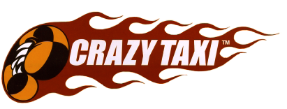

<style>
.my_pos_img {
    -webkit-border-radius: 30px;
    -moz-border-radius: 30px;
    width: 60px;
    position: absolute;
    top: calc(50% - 49px);
    left: calc(50% - 26px);
    z-index: 2;
}
</style>

<ons-navigator title="Navigator" var="homeNavigator">
    <ons-page>
        <ons-toolbar fixed-style>
            <div class="center">
                
            </div>
            <div class="right" style="line-height: 44px">
                <ons-toolbar-button ng-click="menu.toggleMenu()">
                    <ons-icon icon="ion-navicon" style="font-size: 32px; width: 1em;"></ons-icon>
            	</ons-toolbar-button>
            </div>
        </ons-toolbar>

        <div id="map"></div>

        
    </ons-page>
    
    <ons-template id="alert-dialog.html">
        <ons-alert-dialog var="alertDialog">
            <div class="alert-dialog-title">
                <strong style="color: #ff3333" id="alertDialogTitle">定位失敗!</strong>    
            </div>
            <div class="alert-dialog-content">
                <span id="alertDialogText">請確定已開啟GPS功能，並重新嘗試。</span>
            </div>
            <div class="alert-dialog-footer">
                <button id="dialog_btn" class="alert-dialog-button" onClick="location.reload()">OK</button>
            </div>
        </ons-alert-dialog>
    </ons-template>

</ons-navigator>

<script>
var map;
var directionsDisplay;
var directionsService = new google.maps.DirectionsService();
var pinA = null;
var pinB = null;
var currentMark = null;

ons.ready(function() {
    setTimeout(function() {

        onDeviceReady();

        showFloatIcon();
        
        HoldOn.close();

        menu.setSwipeable(false);
    }, 10);
});

function onDeviceReady() {

    isFirstTime = true;

    var options = {
      enableHighAccuracy: true,     // 高精度定位
	  timeout: 10000,               // 10秒 timeout
	  maximumAge: 3 * 60 * 1000     // 暫存3分鐘
	};
	
	function success(pos) {
        
	    init(pos);
	};
	
	function error(err) {
	    
        console.warn('ERROR(' + err.code + '): ' + err.message);

        ons.createAlertDialog('alert-dialog.html').then(function(alertDialog) {

            alertDialog.show();
        });
	};

    navigator.geolocation.getCurrentPosition(success, error, options);
}

function init(position) {

    var pos_lat = position.coords.latitude;
    var pos_lng = position.coords.longitude;
  
    var latlng = window.localStorage.getItem("marker_center");
    if(latlng != "" && latlng != null) {

        var temp = latlng.split(",");
        pos_lat = temp[0];
        pos_lng = temp[1];

        window.localStorage.setItem("marker_center", "");  // 只用一次 
    }

	var infowindow = new google.maps.InfoWindow({
		content: "",
        disableAutoPan: true
	});
    
    google.maps.event.addListener(infowindow, 'closeclick', function(){
        
        if(currentMark != null) {
            
            currentMark.setVisible(true);
            directionsDisplay.setDirections({routes: []});
            if(pinA)    pinA.setMap(null);
            if(pinB)    pinB.setMap(null);
        }
    });

	// Init map
	map = new google.maps.Map($('#map').get(0), {
		center: {lat: parseFloat(pos_lat), lng: parseFloat(pos_lng)},
		zoom: 14,
		mapTypeControl: false,
		streetViewControl: false,
	});
    
    // 路徑導航
    var rendererOptions = {
        map: map,
        suppressMarkers : true
    }
    directionsDisplay = new google.maps.DirectionsRenderer(rendererOptions);
    directionsDisplay.setMap(map);

    // 返回中心點
    var centerControlDiv = document.createElement('div');
    var centerControl = new CenterControl(centerControlDiv, map, position);
    centerControlDiv.index = 1;
    map.controls[google.maps.ControlPosition.RIGHT_BOTTOM].push(centerControlDiv);

    var markerImage = new google.maps.MarkerImage('images/blue.png?123',
                new google.maps.Size(80, 80),
                new google.maps.Point(0, 0),
                new google.maps.Point(40, 40));

    // 自已的座標 
	var marker = new google.maps.Marker({
		position: {lat: position.coords.latitude, lng: position.coords.longitude},
		map: map,
        icon: markerImage,
        zIndex: 0
	});

    var myInfoFlag = true;
	var markers = {};
	map.addListener('bounds_changed', function(){

		var bounds = map.getBounds();
		var center = map.getCenter();
        window.localStorage.setItem("center", center.lat()+","+center.lng());

		var corner = bounds.getNorthEast();
		var radius = GeoFire.distance([center.lat(), center.lng()], [corner.lat(), corner.lng()]);

        if(isFirstTime == true) {

            isFirstTime = false;

			geoQuery.on('key_entered', function(key, location, distance) {

                var location = new google.maps.LatLng(location[0], location[1]);
                cars_info.child(key).once('value', function(snapshot) {
                    
                    var car_no = snapshot.val().car_no;
                    var car_type = snapshot.val().car_type;
                    var car_dir = snapshot.val().car_dir;
                    var driver_name = snapshot.val().driver_name;
  
                    //var image = "images/taxi2.png";
                    
                    var image = {
                        url: "http://52.197.124.196/CrazyTaxi/www/images/taxi2.png",
                        size: new google.maps.Size(64, 64),
                         rotation: google.maps.geometry.spherical.computeHeading(location, marker.getPosition())
                    };
 
                    if(markers[key]) {
                        markers[key].setMap(null);
                        delete markers[key];
                    }
                    markers[key] = new google.maps.Marker({
        				position: location,
    					map: map,
                        draggable:true,
                        title:"Drag me!"
    				});

                    markers[key].setIcon({
                        path: google.maps.SymbolPath.FORWARD_CLOSED_ARROW,
                        strokeColor: 'red',
                        strokeWeight: 3,
                        scale: 6,
                        rotation: car_dir
                    });
                    
                    google.maps.event.addListener(markers[key], 'dragend', function() {
                        
                        var _pos = markers[key].getPosition();
                       // console.log("won test ==> _pos(" + _pos.lat() +")(" + _pos.lng() +")");
                        
                        geoFire.set(key, [_pos.lat(), _pos.lng()]).then(function() {
                			console.log(key + ': setting position to [' + _pos.lat() + ',' + _pos.lng() + ']');
            			});
                    });
                });
			});

			//remove marker, un-highlight
			geoQuery.on('key_exited', function(key, location, distance) {

				markers[key].setMap(null);
				delete markers[key];
			});
            
            
            //remove marker, un-highlight
    		geoQuery.on('key_moved', function(key, location, distance) {

                //var location = new google.maps.LatLng(location[0], location[1]);
                console.log("won test ==> key_moved _pos(" + location[0] +")(" + location[1] +")");
                
                cars_info.child(key).once('value', function(snapshot) {
                    
                    var car_dir = snapshot.val().car_dir;
                    
                    if(markers[key]) {
                        
                        var myLatlng = new google.maps.LatLng(location[0], location[1]);
                        markers[key].setPosition(myLatlng);
                    }
                });
			});
		}

        if(isFirstTime == false) {

			geoQuery.updateCriteria({
				center: [ center.lat(), center.lng() ],
				radius: radius,
		    });
        }
	});
}

function openInfo() {

    homeNavigator.pushPage("page1_info.html", {animation: 'slide'});
}

function CenterControl(controlDiv, map, position) {

  // Set CSS for the control border.
  var controlUI = document.createElement('div');
  controlUI.style.cursor = 'pointer';
  controlUI.style.marginRight = '8px';
  controlDiv.appendChild(controlUI);

  // Set CSS for the control interior.
  var controlText = document.createElement('div');
  controlText.innerHTML = '';
  controlUI.appendChild(controlText);

  // Setup the click event listeners: simply set the map to Chicago.
  controlUI.addEventListener('click', function() {
    map.setCenter({lat: position.coords.latitude, lng: position.coords.longitude});
  });
}

// 路徑導航
function calcRoute(start, end, up_img, down_img) {

    var request = {
		origin: start,
		destination: end,
		travelMode: google.maps.DirectionsTravelMode.DRIVING
	};
    
    if(pinA)    pinA.setMap(null);
    if(pinB)    pinB.setMap(null);
    
    var markerA = new google.maps.MarkerImage(up_img,
    	new google.maps.Size(68, 108),
        new google.maps.Point(0, 0),
        new google.maps.Point(17, 47),
        new google.maps.Size(34, 54));
    var markerB = new google.maps.MarkerImage(down_img,
		new google.maps.Size(68, 108),
        new google.maps.Point(0, 0),
        new google.maps.Point(17, 54),
        new google.maps.Size(34, 54));
        
        
    directionsService.route(request, function(response, status) {
    	if (status == google.maps.DirectionsStatus.OK) {
			directionsDisplay.setDirections(response);
			var _route = response.routes[0].legs[0]; 
			pinA = new google.maps.Marker({
				position: _route.start_location,
				map: map,
				icon: markerA
                //,zIndex:99999999
			}),
			pinB = new google.maps.Marker({
				position: _route.end_location,
				map: map,
				icon: markerB
                //,zIndex:99999999
			});
		}
	});
}

</script>

